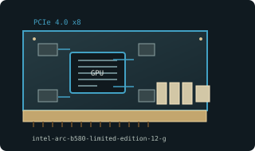

[ MODERN PCI EXPRESS GRAPHICS // IDENTIFIED COMPONENT ]
Intel Arc B580 Limited Edition 12 GB
Battlemage / Xe2-HPG, 2024. This entry identifies one specific product configuration; closely named models and partner-board variants are distinguished below.

MODEL IDENTIFICATION: Connector fits x16 slot but electrical link is x8; bandwidth depends on host generation. Resizable BAR is important for expected performance. Partner boards vary.
Recorded specifications
| Cataloged product | Intel Arc B580 Limited Edition 12 GB |
|---|---|
| Generation / chip | Battlemage / Xe2-HPG, 2024 |
| Core & memory | BMG-G21; 20 Xe2 cores; 12 GB GDDR6; 192-bit bus; 190 W total board power. |
| Host interface & I/O | PCI Express 4.0 x8 electrical; one 8-pin input on Intel Limited Edition; three DisplayPort 2.1 and one HDMI 2.1. |
| Variant boundary | Connector fits x16 slot but electrical link is x8; bandwidth depends on host generation. Resizable BAR is important for expected performance. Partner boards vary. |
| Archive record | Photograph label and PCB revision; record BIOS, driver version, adapters, physical condition, and source-document revision used to verify specimen. |
Compatibility & service notes
Battlemage with 12 GB on 192-bit bus, not Arc A580 (Alchemist) or higher-tier B-series model.
Check host firmware ReBAR and negotiated link width. Inspect cooler and 8-pin lead; save Intel driver package/version and record test conditions.
- Check slot signaling, keying, lane width, auxiliary power, clearance, and PSU requirements; physical insertion alone does not prove compatibility.
- Use drivers supporting this device ID and OS release. Preserve original driver/firmware before updates and record source.
- Do not energize cards with cracks, corrosion, damaged power sockets, obstructed fans, or suspected shorts; inspect before bench testing.
Manufacturer & standards sources
- Intel Arc B580 Limited Edition specificationsUse alongside the exact board label and revision; archived family data may not describe every OEM implementation.
- PCI-SIG PCI Express standardsUse alongside the exact board label and revision; archived family data may not describe every OEM implementation.
- Intel Arc B580 12 GB specificationsUse alongside the exact board label and revision; archived family data may not describe every OEM implementation.
- BC Zone — Intel Arc B580 Limited Edition Review - Worth It?Independent video review; treat as supplementary context, not primary manufacturer documentation.
Specifications describe the cataloged reference configuration only. Manufacturer manuals and physical product label take precedence for a specific OEM revision.